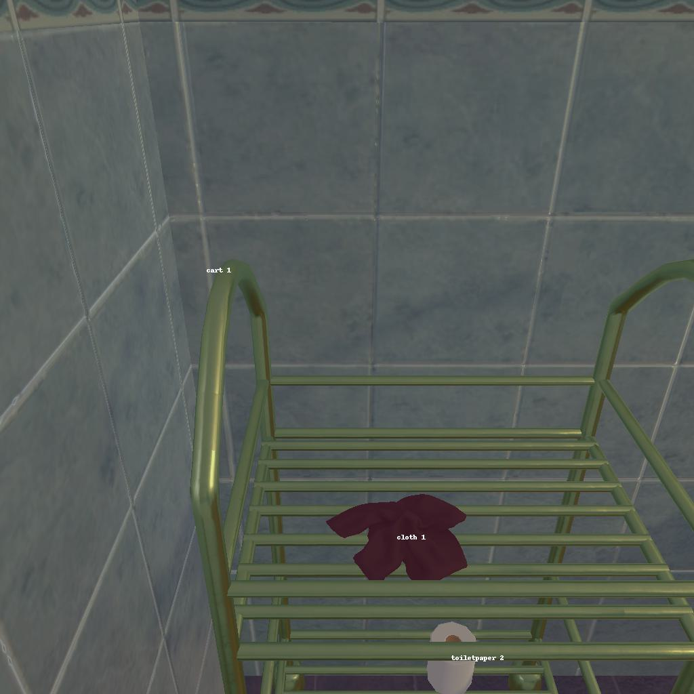

---------------------------------------------------------task: 25---------------------------------------------------------
--------------------------------------------------------------------------------------------------------------------------------------------------------------------
--------------------------------------------------------------------------------------------------------------------------------------------------------------------
Step:--------------------------------------------------------------------------2-------------------------------------------------------------------------------
----------------------------------------
VLM Prompt:
Image1:
**Instruction**
1. Analyze the provided image to identify all visible household objects, focusing on those relevant to the task description "put two dishsponge in cart."
2. Use the analysis of the image and the task hint "The agent must find an object of the desired type, pick it up, find the correct location to place it, put it down there, then look for another object of the desired type, pick it up, return to previous location, and put it down there with the other object." to answer the question: what is the most reasonable action in the choices for the task description "put two dishsponge in cart"?
4. Decide and write the answer using the template: The answer is: (i): , where i is the real number. If there is no desired object in the image, search every place based on **Initial Observation** to find the object. And if no one is exactly correct, choose a similar answer.
**Initial Observation**
You are in the middle of a room. Looking quickly around you, you can see bathtub (1), bathtubbasin (1), cart (1), toilet (1), garbagecan (1), toiletpaperhanger (1), shelf (1-4), sink (1), sinkbasin (1), handtowelholder (1)
**Answer Choices**
(1): go to bathtub 1
(2): go to bathtubbasin 1
(3): go to toilet 1
(4): go to garbagecan 1
(5): go to toiletpaperhanger 1
(6): go to shelf 2
(7): go to shelf 3
(8): go to shelf 4
(9): go to sink 1
(10): go to sinkbasin 1
(11): go to handtowelholder 1
(12): take cloth 1 from cart 1
(13): take toiletpaper 2 from cart 1
(14): examine cart 1
**Answer**
Let's think step by step by following the instructions.
----------------------------------------
----------------------------------------
Original Response:
The task is to put two dishsponges in the cart. From the image provided, we can see a cart labeled "cart 1" and a cloth labeled "cloth 1," but no dishsponges are visible in the image.
Based on the "Initial Observation," the dishsponges are not mentioned, so they could be in a place that is not immediately visible from the current perspective. Since we need to find dishsponges, we should search in likely locations where a dish sponge might be stored, such as shelves or near the sink.
Looking at the answer choices, there are options to go to different locations in the room, but none of the options are to pick up a dishsponge because it is not visible in the image. The closest relevant options would be to go to places where a dishsponge might be found, such as the shelf or sink.
Since shelves are common storage areas for cleaning supplies and the task requires finding an object, it would make sense to check the shelves first.
The answer is: (6): go to shelf 2. If no dishsponge is found there, continue searching the shelves and sink areas.
----------------------------------------
----------------------------------------
>>> Refine Original VLM Response and Get Pure Action: go to shelf 2
----------------------------------------
-----------------------------------------------------------------
Running time: 9.991843700408936 seconds
Total Money: 8.927600000000007
-----------------------------------------------------------------
-----------------------------------------------------------------
Text Observation:You arrive at loc 7. On the shelf 2, you see a papertowelroll 1, a toiletpaper 1, and a soapbar 1.
-----------------------------------------------------------------
UNSUCCEED